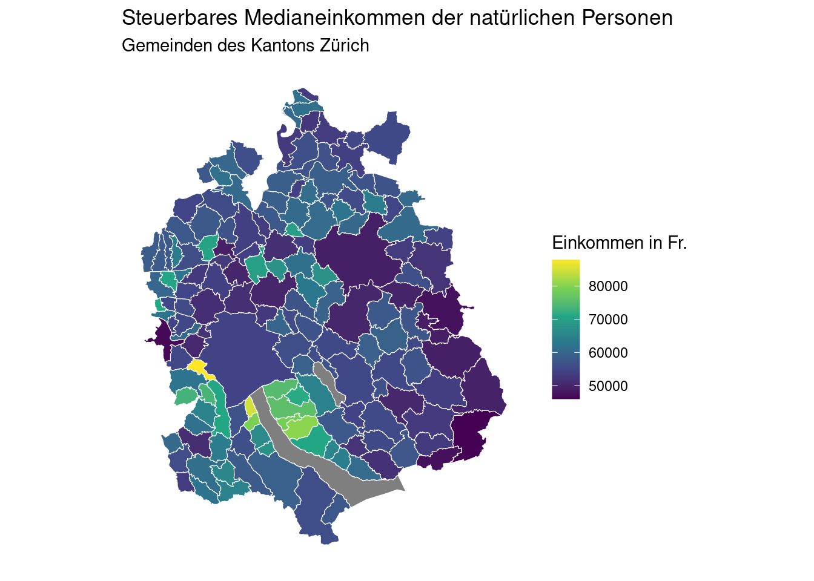
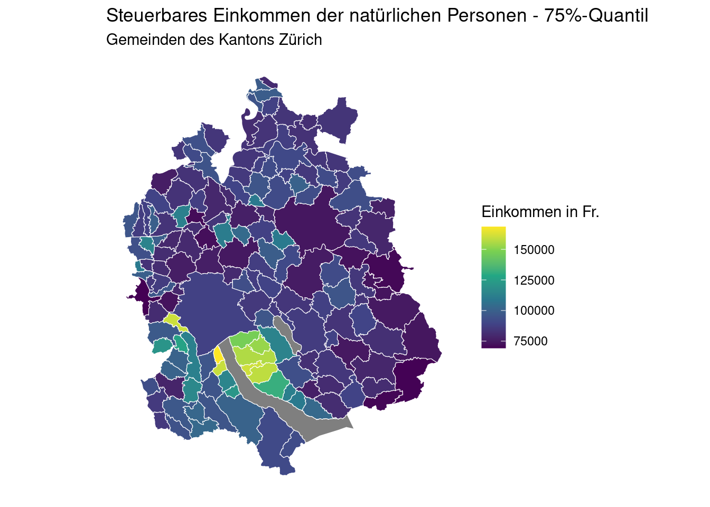
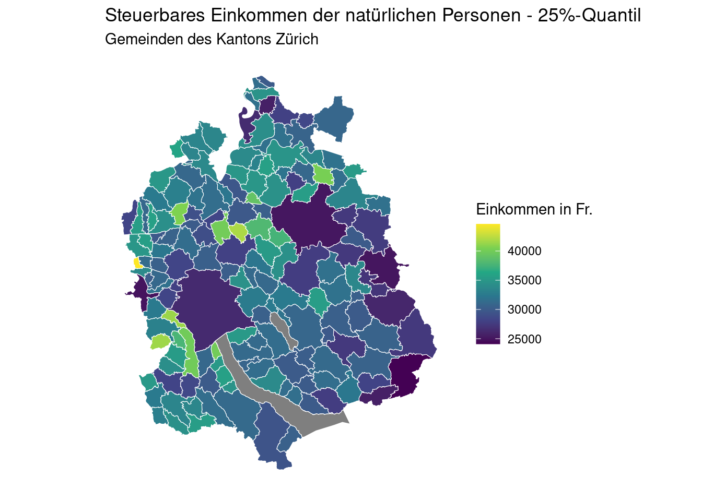

library(tidyverse)
library(sf)
library(ggplot2)
library(ggthemes)Regionale Einkommensunterschiede im Kanton Zürich
Einleitung
Im Rahmen dieser Arbeit sollen die regionalen Unterschiede im Einkommen von natürlichen Personen innerhalb des Kantons Zürich betrachtet werden und etwaige regionale Muster anhand von Karten visuell sichtbar gemacht werden. Die Höhe des Einkommens von natürlichen Personen ist ein Indikator für die Attraktivität einer Gemeinde und kann bis zu einem gewissen Grad auch die finanziellen Möglichkeiten einer Gemeinde widerspiegeln. Im Rahmen des Berichts wird das steuerbare Einkommen1 steuerpflichtiger natürlicher Personen aus der Bundessteuerstatistik betrachtet.
Daten
Die verwendeten Daten umfassen zum einen das 25%-Quantil 2 / das 50%-Quantil (Median) 3 und das 75%-Quantil4 des steuerbaren Einkommens natürlicher Personen in den Gemeinden des Kantons Zürich. Diese Daten werden vom Statistischem Amt des Kantons Zürich als Open Government Data (OGD) bereit gestellt. Die sogenannten Quantile sind Schwellenwerte: So liegen ein Viertel der steuerbaren Einkommen unter dem 25%-Quantil, die anderen drei Viertel über dem 25%-Quantil. Korrespondierend liegt die Hälfte der steuerbaren Einkommen unter dem 50%-Quantil, die anderen Hälfte über dem 50%-Quantil. Um diese Einkommens-Informationen anhand einer Karte abzubilden, wird des Weiteren ein Shapefile, welches die Gemeindegrenzen der Zürcher Gemeinden beinhaltet, verwendet.5
Laden der Pakete
Einlesen der Daten
# Datensätze mit Einkommensinformationen
data_q25 <- read_csv(here::here("daten/raw/KANTON_ZUERICH_315.csv"))
data_q50 <- read_csv(here::here("daten/raw/KANTON_ZUERICH_316.csv"))
data_q75 <- read_csv(here::here("daten/raw/KANTON_ZUERICH_318.csv"))
# Geodaten Gemeinden Kanton Zürich - Stand 26.01.2024
municipality_prod_geo <- read_sf(here::here("daten/raw/UP_GEMEINDEN_F.shp"))Aufbereitung der Daten für Analyse
# Extrahiere aktuellstes Jahr, für welches Daten verfügbar sind
max_year_q25 <- max(data_q25$INDIKATOR_JAHR)
max_year_q50 <- max(data_q50$INDIKATOR_JAHR)
max_year_q75 <- max(data_q75$INDIKATOR_JAHR)
# Filtere das aktuellste Jahr (2021) und Gemeinden (BFS_NR > 0) für alle drei Datensätze heraus
data_q25_2021 <- data_q25 |> filter(INDIKATOR_JAHR == max_year_q25)
data_q25_2021 <- data_q25_2021 |> filter(BFS_NR > 0)
data_q50_2021 <- data_q50 |> filter(INDIKATOR_JAHR == max_year_q50)
data_q50_2021 <- data_q50_2021 |> filter(BFS_NR > 0)
data_q75_2021 <- data_q75 |> filter(INDIKATOR_JAHR == max_year_q75)
data_q75_2021 <- data_q75_2021 |> filter(BFS_NR > 0)
# Ändere Identifier zu Character-Format um Steuerdatensätze mit Shapefile zu verknüpfen
#Q25-dataframe
data_q25_2021$BFS_N <- as.character(data_q25_2021$BFS_NR)
#Q50-dataframe
data_q50_2021$BFS_N <- as.character(data_q50_2021$BFS_NR)
#Q75-dataframe
data_q75_2021$BFS_N <- as.character(data_q75_2021$BFS_NR)
# Shapefile
municipality_prod_geo$BFS_N <- as.character(municipality_prod_geo$BFS)
# Zusammenfügen der Datensätze
municipality_q25 <- left_join(municipality_prod_geo, data_q25_2021, by = "BFS_N")
municipality_q50 <- left_join(municipality_prod_geo, data_q50_2021, by = "BFS_N")
municipality_q75 <- left_join(municipality_prod_geo, data_q75_2021, by = "BFS_N")
# Speichern der fertigen Datensätze:
write_csv(x= data_q75_2021,
here::here("daten/processed/ktzh_steuerb_einkommen_q75_2021.csv"))
write_csv(x = data_q50_2021,
here::here("daten/processed/ktzh_steuerb_einkommen_q50_2021.csv"))
write_csv(data_q25_2021,
here::here("daten/processed/ktzh_steuerb_einkommen_q25_2021.csv"))Ergebnisse
In Tabelle 1 sind zusammenfassende Statistiken für das Medianeinkommen abgebildet. Die Gemeinde Wald weist das niedrigste Medianeinkommen auf (46’000 Franken). Das höchste steuerbare Medianeinkommen aller Zürcher Gemeinden weist die Gemeinde Uitikon mit 87’900 Franken auf.
#Erstellung Tabelle mit zusammenfassenden Statistiken
data_q50_2021 |>
summarise(n = n(),
mean_q50_2021 = mean(INDIKATOR_VALUE),
min_q50_2021 = min(INDIKATOR_VALUE),
max_q50_2021 = max(INDIKATOR_VALUE)) |>
gt::gt() |>
gt::cols_label(
n = "N",
mean_q50_2021 = "Durchschnitt",
min_q50_2021 = "Minimum",
max_q50_2021 = "Maximum") |>
gt::tab_footnote("N = Anzahl Beobachtungen. Quelle Daten: Statistisches Amt des Kantons Zürich") |>
gt::fmt_currency(
columns = c(mean_q50_2021, min_q50_2021, max_q50_2021),
currency = "CHF",
decimals = 0,
use_seps = TRUE,
sep_mark = "'",
dec_mark = ".",
placement = "left",
incl_space = TRUE
)
# Gemeinden mit niedrigsten / höchsten Werte
min_row_50 <- data_q50_2021 |> slice_min(INDIKATOR_VALUE, n = 1)
max_row_50 <- data_q50_2021 |> slice_max(INDIKATOR_VALUE, n = 1)
min_row_75 <- data_q75_2021 |> slice_min(INDIKATOR_VALUE, n = 1)
max_row_75 <- data_q75_2021 |> slice_max(INDIKATOR_VALUE, n = 1)
min_row_25 <- data_q25_2021 |> slice_min(INDIKATOR_VALUE, n = 1)
max_row_25 <- data_q25_2021 |> slice_max(INDIKATOR_VALUE, n = 1)| N | Durchschnitt | Minimum | Maximum |
|---|---|---|---|
| 163 | SFr. 58'547 | SFr. 46'000 | SFr. 87'900 |
| N = Anzahl Beobachtungen. Quelle Daten: Statistisches Amt des Kantons Zürich | |||
Um etwaige regionale Muster oder Cluster erkennen zu können, ist es oftmals hilfreich, die Daten mithilfe einer Karte darzustellen.
In Abbildung 1 ist das steuerbare Medianeinkommen der Zürcher Gemeinden dargestellt. Die Karte zeigt, dass neben der Gemeinde Uitikon (Nachbargemeinde der Stadt Zürich, in gelb), welche das höchste Medianeinkommen aufweist, insbesondere die Gemeinden am Ufer des Zürichsee mit Nähe zur Stadt Zürich sehr hohe Medianeinkommen aufweisen.
# Erstellung Abbildung für Median
ggplot() +
geom_sf(data = municipality_q50, aes(fill=INDIKATOR_VALUE), color = "#FFFFFF", size = 0.2) +
scale_fill_viridis_c(name = "Einkommen in Fr.", option = "viridis") +
labs(title = "Steuerbares Medianeinkommen der natürlichen Personen",
subtitle = "Gemeinden des Kantons Zürich") +
theme_minimal() +
theme(
axis.text = element_blank(),
axis.ticks = element_blank(),
panel.grid = element_blank(),
legend.position = "right"
)

Ergänzend zum Medianeinkommmen sind in den zwei nachfolgenden Karten die Werte für das obere Quartil (75%-Quantil) sowie die Werte für das untere Quartil (25%-Quantil) der Zürcher Gemeinden dargestellt. Für das obere Quartil in Abbildung 2 zeigt sich, dass wie beim Medianeinkommen die Anrainergemeinden des Zürichsees in direkter Nähe zur Stadt Zürich die höchsten Werte aufweisen.
#Erstellung Abbildung für q75
ggplot() +
geom_sf(data = municipality_q75, aes(fill=INDIKATOR_VALUE), color = "#FFFFFF", size = 1) +
scale_fill_viridis_c(name = "Einkommen in Fr.", option = "viridis") +
labs(title = "Steuerbares Einkommen der natürlichen Personen - 75%-Quantil",
subtitle = "Gemeinden des Kantons Zürich") +
theme_minimal() +
theme(
axis.text = element_blank(),
axis.ticks = element_blank(),
panel.grid = element_blank(),
legend.position = "right"
)

In Abbildung 3 sind abschliessend die Werte für das untere Quartil des steuerbaren Einkommens dargestellt. Den niedrigsten Wert (24’100 Franken) weist hier wie beim Medianeinkommen die Gemeinde Wald auf. Den höchsten Wert für das untere Quartil weist die Gemeinde Hüttikon mit 44’600 Franken auf.
#Erstellung Abbildung für q25
ggplot() +
geom_sf(data = municipality_q25, aes(fill=INDIKATOR_VALUE), color = "#FFFFFF", size = 1) +
scale_fill_viridis_c(name = "Einkommen in Fr.", option = "viridis") +
labs(title = "Steuerbares Einkommen der natürlichen Personen - 25%-Quantil",
subtitle = "Gemeinden des Kantons Zürich") +
theme_minimal() +
theme(
axis.text = element_blank(),
axis.ticks = element_blank(),
panel.grid = element_blank(),
legend.position = "right"
)

Schlussfolgerungen
- Die Darstellung anhand von Karten ermöglicht den Betrachtenden eine einfache Erfassung von allfälligen räumlichen Mustern
- Nicht ganz überraschend zeigt sich, dass die Gemeinden am Ufer des Zürichsees in unmittelbarer Nähe zu Zürich vergleichsweise sehr hohe Medianeinkommen aufweisen
Fußnoten
Das steuerbare Einkommen ist wie folgt definiert: “Beim steuerbaren Einkommen handelt es sich um die steuerbaren Bruttoeinkünfte abzüglich den Gewinnungskosten, den allgemeinen Abzügen sowie den Sozialabzügen.” (Quelle: https://www.stadt-zuerich.ch/artikel/de/statistik-und-daten/2017-08-29_einkommen-in-der-stadt-zuerich-steigen.html)↩︎
https://www.zh.ch/de/politik-staat/statistik-daten/datenkatalog.html#/datasets/245@statistisches-amt-kanton-zuerich↩︎
https://www.zh.ch/de/politik-staat/statistik-daten/datenkatalog.html#/datasets/246@statistisches-amt-kanton-zuerich↩︎
https://www.zh.ch/de/politik-staat/statistik-daten/datenkatalog.html#/datasets/249@statistisches-amt-kanton-zuerich↩︎
Stand Geodaten: 26.01.2024. Die Daten sind hier verfügbar: https://www.stadt-zuerich.ch/geodaten/download/95.↩︎